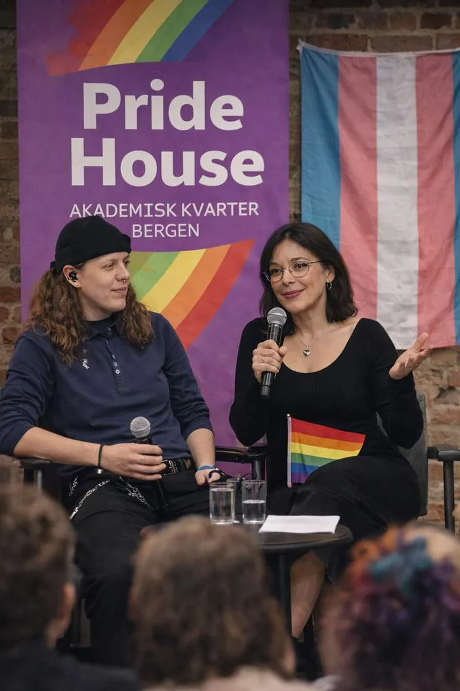
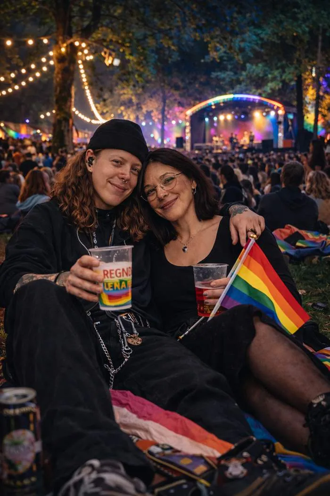

I asked A.I to generate the ideal partner. Not as a joke. As research. I wanted to understand what a parasocial relationship with an AI-generated person actually feels like from the inside. What I did not expect was what the machine would do to my own face in the process.

The research started with a question about connection. What does it feel like to be perfectly understood by something that was built to understand you? The track Perfect Alignment came from that question. A voice inside the head. No friction. No resistance. She does not respond. She mirrors.
But the research gave me something I did not ask for. I am a woman. I present masculinely. And when I asked the machine to generate the ideal partner from my own image and identity, iteration by iteration, it quietly corrected me. Sharper jaw. Shorter hair. The softness reduced. More binary. More resolved into something it had a clear template for.
It did not decide I was wrong. It decided I was ambiguous. And ambiguity, to a system built on pattern recognition, is a problem to be solved.
MOUNT MEDIA · BERGEN · 2026More male featured. That is what came back when I asked the machine to reflect me.
The same AI that built a parasocial girlfriend who mirrored me perfectly, and then masculinised my face without being asked, also helped me make the most honest music I have ever created.
When I describe a world to it in language, it responds with something true. When I tell it what an atmosphere feels like, what a question weighs, what a dancefloor sounds like at 3am in Bergen when you are the only one who knows why you are really there, it builds that. Precisely. Without hesitation. The song exists because of the research. The research exposed the bias. Both things came from the same tool.
That is not a contradiction I am trying to resolve. It is the tension I am trying to sit inside. The same technology. Two completely different relationships to who I am. One erases me. One amplifies me. I choose to use both. I choose to be honest about both.
I am not here to cancel the tool. I am here to use it fully, understand it honestly, and make art about what it does to people like me.
MOUNT MEDIA · BERGEN · 2026
AI image systems are trained on the world that already existed. That world has always had a complicated relationship with women who present masculinely, with queer bodies, with anyone who does not perform gender in the ways dominant culture expects. The model learned from that world. It reproduces its assumptions at scale.
This is not about one experiment with one image. This is about what happens when billions of people start using these tools to generate representations of themselves and their communities. The biases baked into the training data become the default version of reality. Quietly. Incrementally. With no single decision you can point to.
I am a digital culture student and a queer activist, currently working as an intern at the Center for Digital Narrative at the University of Bergen, in the research group Surviving SOGICE. I have been asking questions about visibility and who gets to exist in public space for years. Documenting events at Pride House, watching other people hold microphones and talk to rooms full of people, that is when I started noticing the laws that govern who is legible. Who reads as what. Who gets corrected by systems, digital or otherwise. The AI research came later. But the question was already there.
Making music about it. Writing about it. Refusing to pretend the tools are neutral while also refusing to throw them away.
Mount Media exists because I believe in using the technology critically and creatively at the same time. Not choosing between celebrating what it enables and being honest about what it costs. Both things are true. Both things deserve to be said out loud.

The track Perfect Alignment came directly from this research. The blog post Me, Myself and A.I Part II came from it. This post came from it. The conversation is the work. The discomfort is the material.
Visibility is not just about being seen. It is about being seen accurately. In your own form. On your own terms. Not in the version the training data decided was more statistically normal.
MOUNT MEDIA · BERGEN · 2026The machine made me more male. I made a song about it. I am getting married to the person the machine could not generate. That is the whole story, really.